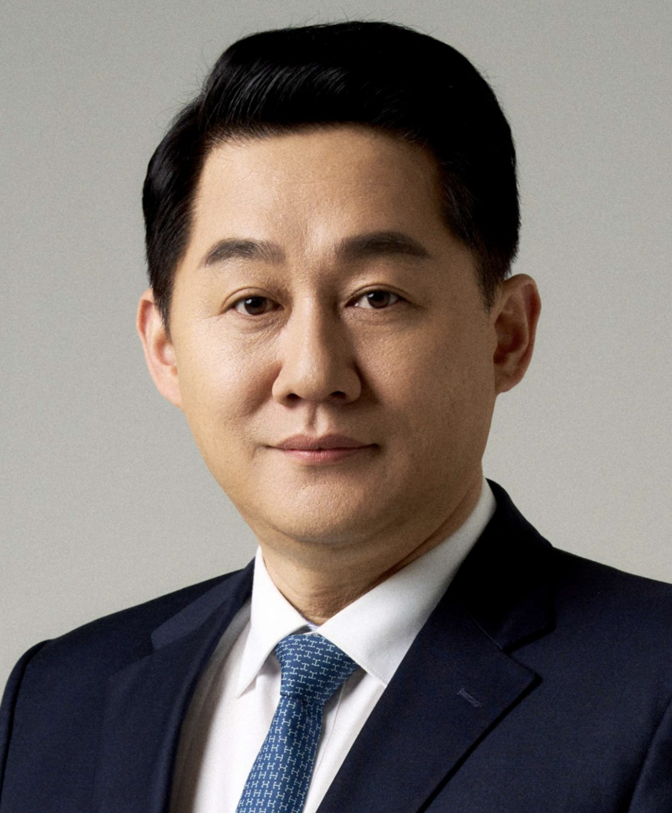

“AI 사업은 크게 이 세 갈래입니다”로 전체 지형을 깔아드린 뒤,
“그래서 대표님은 이쪽”으로 좁혀 들어가는 도입 자료.

기술을 만드는 싸움은 끝났고,
검증된 기술을 누가 먼저 어느 시장에 꽂느냐의 싸움이 시작됐다.
돈 버는 방식도, 어울리는 사람도 다르다. 먼저 전체 지형을 한 번에 본다.
| 구분 | 에이전시 | SaaS | 컨설팅 연결 |
|---|---|---|---|
| 한 줄 | 기업별 맞춤 구축·납품 | 산업 특화 구독 서비스 | 기업↔기술 매칭 운영사 |
| 수익 구조 | 프로젝트 구축비 + 운영비 | 고객 수 × 월 구독료 (누적) | 기획비 + 운영·성사 수수료 |
| 매출까지 시간 | 빠름 (수주하면 바로) | 느림 (제품 개발 후) | 중간 (영업·연결 사이클) |
| 확장 방식 | 사람을 늘려야 함 | 복제로 폭발 가능 | 네트워크 → 플랫폼화 |
| 초기 투입 | 개발 인력 | 제품 개발비·시간 | 적음 — 중개 마진은 얇다 |
| 투자 매력도 | 낮음 | 높음 | 중간 → 플랫폼화 시 상승 |
| 핵심 자원 | 개발자 풀 | 산업 이해 + 개발팀 | 네트워크·신뢰 |
세 유형이 어떻게 돈을 벌고, 어떤 단계를 거쳐 커지는지.
기업이 “이거 필요하다”고 의뢰하면, 검증된 오픈소스를 그 기업에 맞게 커스터마이징해서 구축·납품한다.
고객이 시키는 걸 받아 만들어주는 수주·대행형.
범용 오픈소스를 한 산업에 특화된 AI 서비스로 포장해, 그 산업의 여러 고객에게 월 구독으로 판다.
한 번 만들어 반복 판매하는 제품형. 차별화는 “그 산업을 얼마나 잘 아느냐”.
직접 만들지도 구축하지도 않는다.
AI가 필요한 기업과 그걸 해결할 기술팀을 연결하고, 그 사이에서 과제를 설계·운영하며 수수료를 받는다.
오너의 네트워크 자체가 핵심 자산인 중개·연결형.
세 유형은 끊어진 선택지가 아니다. 같은 오픈소스라도 어떻게 파느냐에 따라 사업의 성격이 달라진다.
에이전시로 현금을 벌며 시작해,
반복되는 솔루션을 제품으로 만들면 SaaS·스타트업으로 진화한다.
이 모델의 핵심 자원은 기술이 아니라 네트워크와 신뢰입니다. 기업의 막연한 니즈를 과제로 정의하고, 그걸 풀 기술팀을 붙여 사업이 되게 만드는 일 — 대표님이 이미 현장에서 해오신 일과 결이 닿아 있습니다.
💡 기술은 빌려오고, 대표님은 판단과 연결에 집중하는 구조.
대표님의 강점이 곧 사업의 엔진이 될 수 있다고 봅니다.
나머지 두 길도 열어둔 채, 2차에서 함께 좁혀가시죠.